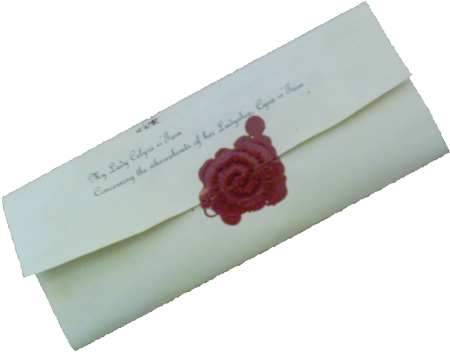
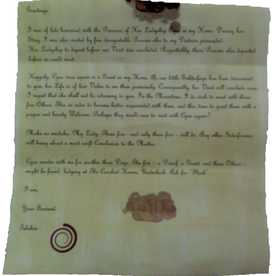
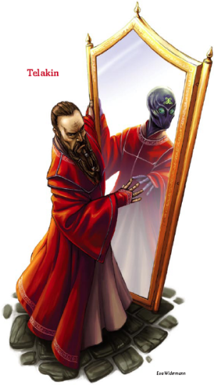
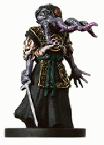

Week 16 - The BBEG - or is he? And the favour of house ir’Tarn.
The party elect to continue. They consider holing up in the planning room, but what's the point? Their rest would be interrupeted anyway, so the casters would not get their spells back. They spend a few minutes shovelling the various documents in the planning room into their Bag of Holding. They then head back to the octagonal room. Behind the secret door through which Jericho saw the two doppelgangers flee, is a short corridor which opens up onto what is clearly a mirror maze.
The reflections are, of course, somewhat harsh.
Jericho scouts into the maze, dragging a 50‘ rope behind him. He manages to map out maybe half of it, and to identify the main wall. The party follow. But there's an unexpected twist - one of the gaps in the maze closes! A mirror shoots up from floor to ceiling, closing the route.
Tom, feeling cramped, begins to smash the mirrors. These are metal - not simply glass - so it takes him a few seconds to deal with each. While the party are divided and before Tom can destroy the maze, the doppelgangers attack. Invisibly, they target the spellcasters. Arn and Jericho begin fighting. Flash casts See Invisible. After a round or two, the third doppelganger (which unknown to the party had gone to warn the BBEG) joins the fray. Tom is still smashing mirrors, so the rest of the party deals with the creatures. The party eventually prevail.
After their battle, the party are even more beat up than previously. They decide to withdraw. Heading back to the water control chamber, they assemble on the pillar and lower it. Then, rather than attempt to deal with a room full of water, they decide to have their Rope of Climbing attach itself to the rope ladder hanging down the shaft, and they exit via that route. They go back to The Crooked House to recuperate, even though there are doubts about the safety of the place, and questions as to how the doppelgangers located them. Did Eligos set them up?
They rest and recover. Next day, there is a commontion in the street outside. A skycarrige descends, and disgorges a squad of guards in livery who proceed to secure the immediate area. Then another does the same. Finally, a guard with a little more braid than the rest speaks into his hand, and a third skycarrige descends. Out steps a man - perhaps a half-elf - of medium age, dressed quietly in what to the discerning eye are actually very expensive threads indeed. He simply approached the bar and asks for Flash.
Flash makes himself known. The man identifies himself as Reginald ir’Tarn. The name means nothing to the party, but the barman just about faints. He asks after Flash's companions, and Flash indicates the others. “A giant, a dwarf, and three others. I see that I have the correct group. I have matters of grave and urgent import to discuss - perhaps privately in your rooms?” Flash agrees and they retire to where they might speak with a smidge more privacy.
“As I mentioned, I am Reginald ir’Tarn. Yesterday, someone appeared at
our gates claiming to be our cousin, Cyra. Cyra had not left us meantime,
but this person was of Cyra's exact appearance and knew the pass-phrases
admitting her to our estate. We left the two Cyras with Geoffrey, our
captain of household security, and two guards and immediately called for
a mage or artificer to uncover the truth. They were alone for two
minutes. When we returned, the two guards were dead and Geoffrey and
both Cyras were gone.
“An hour ago, we received this:


Concerning the whereabouts of her Ladyship, Cyra ir’Tarn
Greetings.
I was of late honoured with the Presence of Her Ladyship Cyra in my Home. During her Stay, I was also visited by five disreputable Persons who to my Distress persuaded Her Ladyship to depart before our Visit was concluded. Regrettably, these Persons also departed before we could meet.
Happily, Cyra once again is a Guest in my Home. As our little Subterfuge has been discovered to you, her Life is of less Value to me than previously. Consequently, her Visit will conclude soon. I regret that she shall not be returning to you. In the Meantime, I do wish to meet with these five Others. This in order to become better acquainted with them, and this time to greet them with a proper and hearty Welcome. Perhaps they would care to visit with Cyra again?
Make no mistake, My Lady. These five - and only these five - will do. Any other Interference will bring about a most swift Conclusion to the Matter.
Cyra resides with me for another three Days. The five - a Dwarf, a Giant, and three Others - might be found lodging at The Crooked House, Underlook. Ask for "Flash".
I am,
Your Servant,
Telakin
Yes, I went to way too much trouble to arrange a plot hook to get the party back into the dungeon. Sue me. Everyone needs a hobby, and mine is D&D.
The party agree. They head back to the warehouse and to the water shaft room where, ominously, the water is back to its "water up" position. They decide to send Jericho through to investigate. Jericho, with a Water Breathing spell, cautiously heads down the shaft and looks into the water control room. He spots a giant octopus, which does not spot him. Stealthily, he moves onto the column and activates the lever, draining the water from the room. The rest of the party descend via the rope ladder and the Rope of Climbing. They then get on the platform and refill the room. Out of range of the octopus' tentacles, they traverse the room unscathed.
Arrgh! Arrgh! Oh well. The rogue made his spot and hide checks. That's the way the cookie crumbles.
The party move through the level unmolested, and traverse the ruined maze. They come to a door. Flash elects to use Clairvoyance to see what is beyond the door.
And on the throne is - Allustan!
Flash comes up with a cunning plan. He will send an illusion of the party into the room. Meanwhile, the party will enter the room covered by an Invisibility Sphere. And then they'll attack. Or something.
So the illusionary party enters the room. Allustan rises from his throne and announces:
“So kind of you to join me. It is time for me to show you the truth of things. Come and learn what lies beyond!”
The illusionary party storm up the left flight of stairs onto the dais, while the hasted real party head towards the right stairs. Flash, however, is not covered by the invisibility sphere. But "Allustan" is not fooled. With a flicker, he changes form and reveals himself.
Drat, drat, drat. Forgot to make the party make move silent checks. This is a classic badly-designed encounter: no support, no mooks, nothing. In retrospect, I should have put the captain of the guard and the false Cyra in here and given them some fighter and sorcerer levels. But I didn't.
As for the invisible party, there's nothing to stop party members occupying a square together, they just cannot melee effectively like that. So I treated the party as all being in a single 5' square until melee starts.
At around this point in the proceedings, Arn, Tom, Frith and Jericho stumble into a pit cleverly positioned in front of the right-hand stairs (explaining why Telakin was not fooled by the illusion). Arn and Jericho leap back in time, but Tom and Frith fall in.
Arn and Jericho, still hasted, proceed up the stairs. Jericho sidesteps at the to of the stairs, neatly avoiding a trap, and Arn - seeing the trap that Jericho did not step into or activate - decides that instead of stepping forward to encounter the villain as he would normally do (being a straight-up dwarf fighter), he also will make a sideways diagonal 5' jinking move, for no particular reason, and also fortuitously avoids the spear trap that he did not know was there. Lucky or what?
Meanwhile, Flash has cast Legion of Sentinels and Telakin is surrounded by sentinels that will strike him if he attempts to cast a spell. Telakin also finds himself flanked by Jericho and Arn, who crossed the room in seconds thanks to their invisibility and haste. He therefore changes form into a half-orc barbarian, draws his Frost Greataxe, and flies into a frenzied rage.
Telakin is a greater doppelganger, and so gains the class abilities of whom he sucks the brains out of.
But, basically, it's no good. He goes down like the proverbial, barely managing to scratch the party with either his spells of his barbarian form.
Tom and Flash get out of the 40' pit, having done not a great deal. Eventually. Jericho searches and finds the hidden door. Behind it is Telakin's Sanctum and - tied in a chair - Cyra ir’Tarn. Who plays no further part in the adventure and just tags along invisibly. There is also a note written in a strange, alien hand:
“I have a task for you, thrall. Meet me at the sewer junction beneath the cold forge and I will give you the details. There are some troublesome small minds that must be removed.”
It is signed with the same symbol that appeared on the note to the ir’Tarn family.
And so that's about it for The Sodden Hold. The party loot, take the very nice magic mirror (half-ogre in the party. 'nuff said.) And head back upstairs. Only thing left to do is negotiate the water control chamber one last time.
Ambush!
A previously unopened secret door in the water control chamber is now open. Arrayed around the ledge are 4 Kenkus - sinister bird men. Not only that, but they are accompanied by 2 Dolgaunts - hideous mockeries of Bugbears created in the depths of Khyber. But worst of all - a creature of nightmare. An Illithid. A Mind Flayer.
At this point, one watches the players stumble over each other to find in-game justification to send someone else in first. All the way down to a point-blank refusal "I'm not going in there!" Had a nice miniature for it, too. Always adds to the ambiance.
Well! Jericho is in front. He uses one of the charges on his Necklace of Fireballs. Flash uses a level 8 Scroll of Fireball. Arn runs out of there and hides around the corner. After this, the Kenkus are gone and the Dolgaunts are smoking. The Mind Flayer, who didn't come for a fight, departs via Plane Shift. The battle after that is short.
A better encounter than it sounds. Yes, the party got off easy. But they had to use up some pretty serious consumables to do it. Fair enough.
The party investigate the bodies and the room. The now-revealed secret door opens up into a tunnel that connects with the Sharn sewer system. Nothing to see there. There is, however, an odd yellow residue on the Dolgunts' boots (or pedal appendages - whatever). Frith or Flash identifies it as a relatively rare fungus known as "Beggar's Gold".
With that, they really are done with the Sodden Hold. They return Cyra. House ir’Tarn is grateful, and gives each character an appropriate item - which brings their wealth up (more or less) to a suitable level for an 8th level character. They retire to The Crooked House and rest, because tomorrow is another day.
Well! The doppelgangers are dealt with, only to reveal an even more frightening foe. And still no clue as to why the party have been targeted. Will the party hunt down this Illithid? I hope so - I haven't begun preparing the next module yet. There's treasure and XP to be had still.
Oh - one last thing. About "no clue as to why they have been targeted"? Not true.